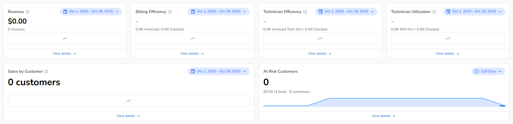

The three ratio tiles read a grey "-" (S3-E3). Every tile with nothing to plot shows a dashed outline with a line-chart icon at its center, no fill, the same height as the trend line (S4-R12 to S4-R18, S5-R16). Every tile keeps its report arrow, with or without data, Technician Efficiency and Technician Utilization included (S10-R1, S4-R18).

Real zeros stay: "$0.00", "0 customers" and "0" keep their headline, and the supporting lines do not change (S4-E2). At Risk has no date range: it reads 0 on 120 days and keeps its twelve-month line, because earlier months had customers at risk. A tile still loading shows the loading placeholder, not this one.